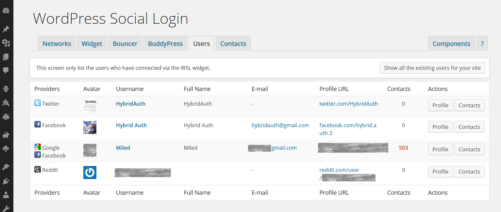
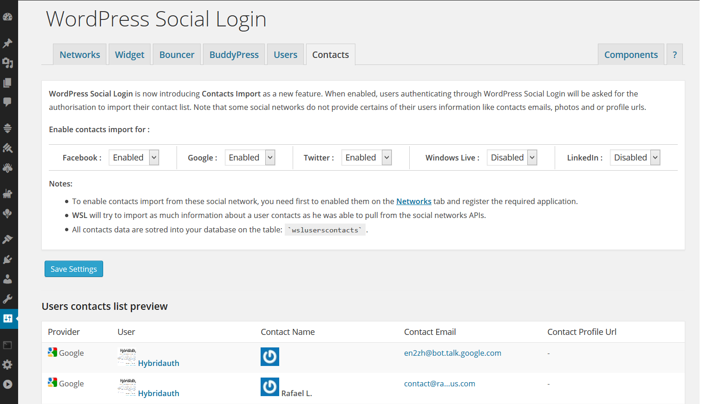

User data User Profiles and Contacts
WordPress Social Login gives you access to a rich and standardized user profile across all the social networks, which include pictures, verified users email addresses, names, gender, age, location and more.
WordPress Social Login also allows you to import users contact list from Google Gmail, Facebook, Windows Live and LinkedIn.
To activate these functionalities, go to WordPress Social Login > Components and enable Users and Contacts.
Users component

Contacts component
